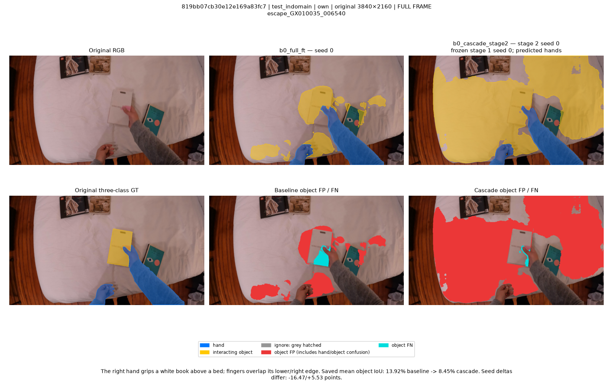
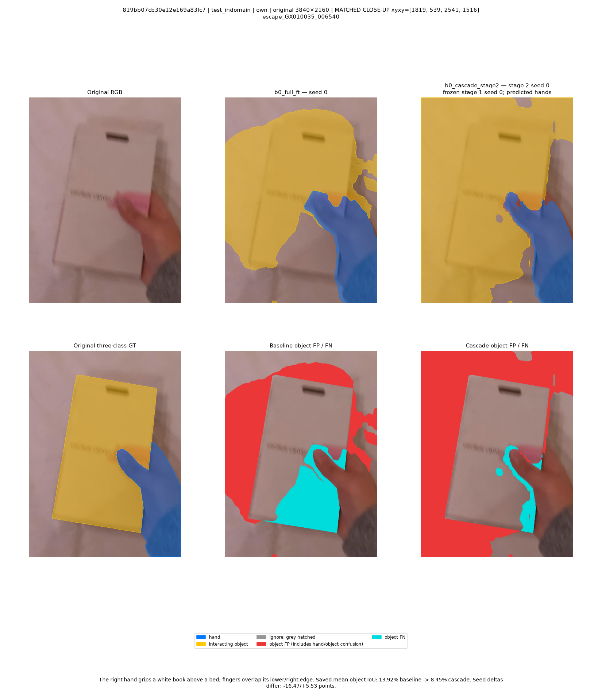
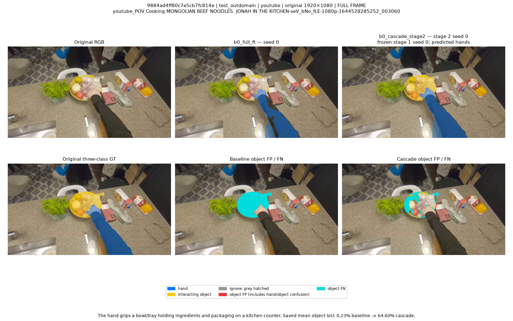
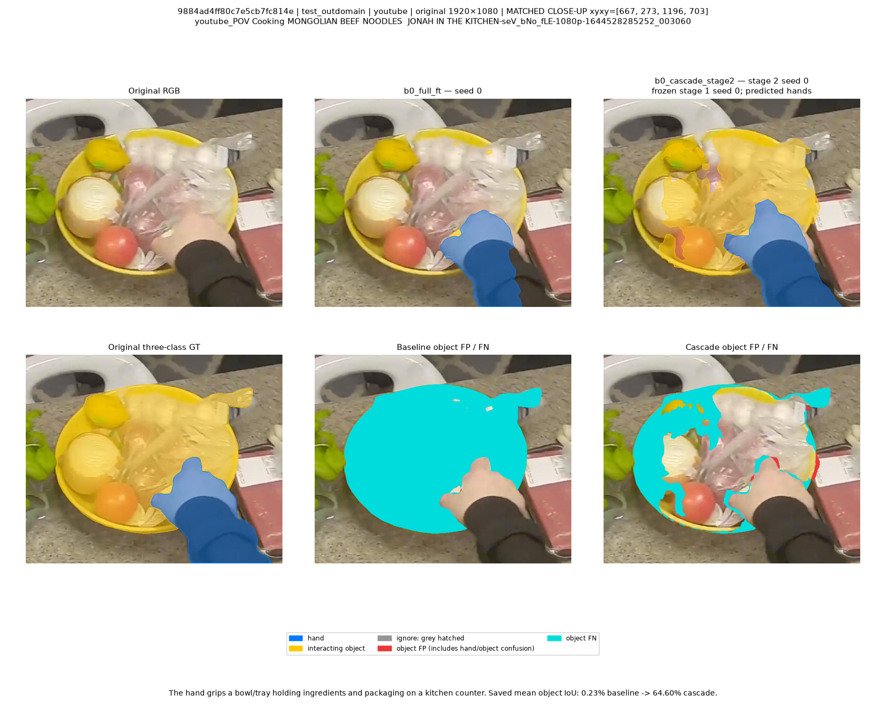
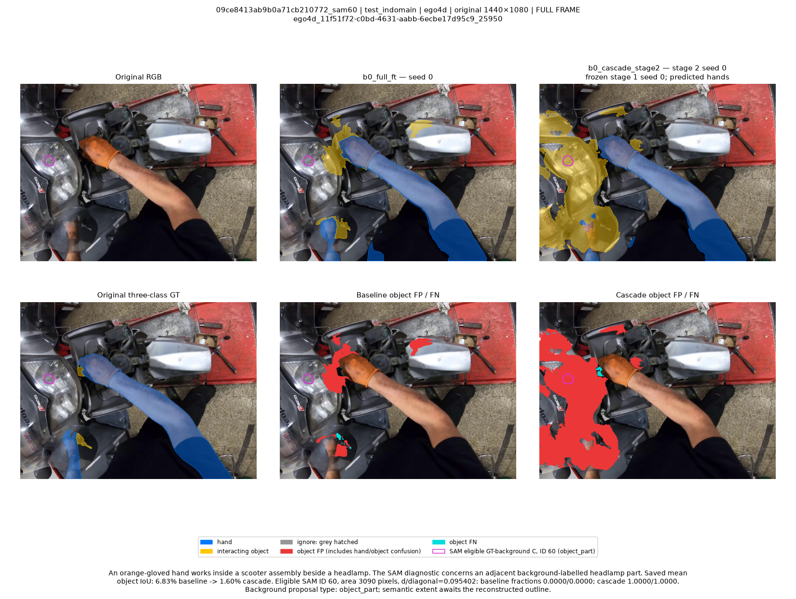
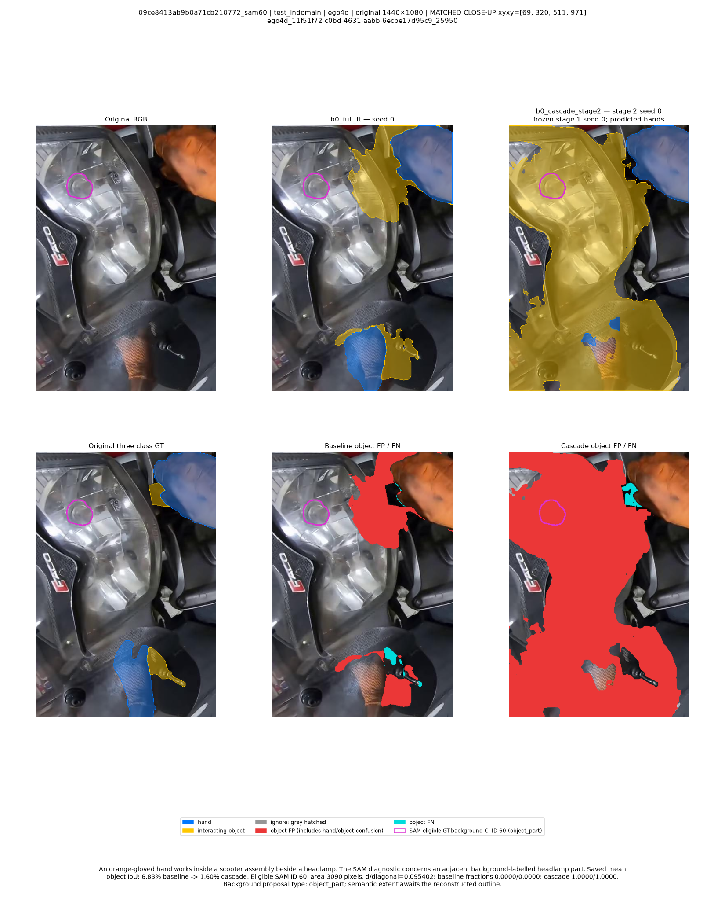
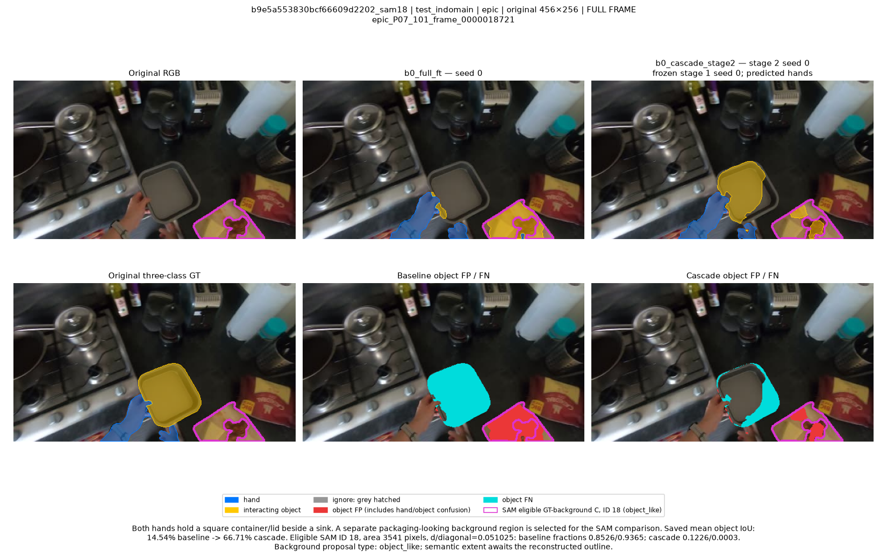
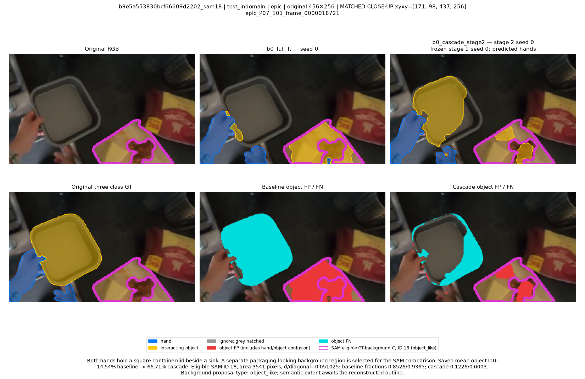

Phase 7: four-case layout preview
Fixed seed-0 display pair; both-seed scores recorded. Selected qualitative evidence is separate from the full-split quantitative evaluation. Category captions and final outputs still require user verification.
Category review
finger_occlusion: supported (Assistant-reviewed RGB/GT draft; actual prediction panels and final user review are pending.); lighting: supported (Assistant-reviewed RGB/GT draft; actual prediction panels and final user review are pending.); motion_blur: uncertain (Some frames have soft or smeared contours, but motion versus defocus cannot be established confidently from the available still thumbnails. No confirmed motion-blur tag is assigned.); small_object: supported (Assistant-reviewed RGB/GT draft; actual prediction panels and final user review are pending.); transparent: uncertain (No unambiguous directly interacting transparent object was confirmed in the 60-image RGB/GT shortlist at thumbnail resolution. Clear background containers or packaging alone are insufficient.); two_hand_object: supported (Assistant-reviewed RGB/GT draft; actual prediction panels and final user review are pending.)
819bb07cb30e12e169a83fc7 · own
escape_GX010035_006540finger_occlusion, ambiguous, regression
The right hand grips a white book above a bed; fingers overlap its lower/right edge. Saved mean object IoU: 13.92% baseline -> 8.45% cascade. Seed deltas differ: -16.47/+5.53 points.


Both-seed object IoUs: {'b0_cascade_stage2': 0.05522796221286663, 'b0_cascade_stage2_s1': 0.11369318465923296, 'b0_full_ft': 0.2199331651623694, 'b0_full_ft_s1': 0.058404547413815275}
9884ad4ff80c7e5cb7fc814e · youtube
youtube_POV Cooking MONGOLIAN BEEF NOODLES JONAH IN THE KITCHEN-seV_bNo_fLE-1080p-1644528285252_003060improvement
The hand grips a bowl/tray holding ingredients and packaging on a kitchen counter. Saved mean object IoU: 0.23% baseline -> 64.60% cascade.


Both-seed object IoUs: {'b0_cascade_stage2': 0.6737123713576438, 'b0_cascade_stage2_s1': 0.6182453871666846, 'b0_full_ft': 0.004663703271879326, 'b0_full_ft_s1': 0.0}
09ce8413ab9b0a71cb210772_sam60 · ego4d
ego4d_11f51f72-c0bd-4631-aabb-6ecbe17d95c9_25950regression, clutter_diagnostic
An orange-gloved hand works inside a scooter assembly beside a headlamp. The SAM diagnostic concerns an adjacent background-labelled headlamp part. Saved mean object IoU: 6.83% baseline -> 1.60% cascade. Eligible SAM ID 60, area 3090 pixels, d/diagonal=0.095402: baseline fractions 0.0000/0.0000; cascade 1.0000/1.0000. Background proposal type: object_part; semantic extent awaits the reconstructed outline.


Both-seed object IoUs: {'b0_cascade_stage2': 0.013915876432602246, 'b0_cascade_stage2_s1': 0.017993409298447612, 'b0_full_ft': 0.08171056017843356, 'b0_full_ft_s1': 0.05480747966680591}
SAM eligible region: {'area': 3090, 'bbox_xyxy': [144, 437, 208, 500], 'bin': 3, 'distance': 0.09540200841636691, 'distance_px': 171.72361514946044, 'mask_id': 60, 'object_fractions': {'b0_cascade_stage2': 1.0, 'b0_cascade_stage2_s1': 1.0, 'b0_full_ft': 0.0, 'b0_full_ft_s1': 0.0}}. A proposal region is not a certified untouched object instance.
b9e5a553830bcf66609d2202_sam18 · epic
epic_P07_101_frame_0000018721two_hand_object, improvement, clutter_diagnostic
Both hands hold a square container/lid beside a sink. A separate packaging-looking background region is selected for the SAM comparison. Saved mean object IoU: 14.54% baseline -> 66.71% cascade. Eligible SAM ID 18, area 3541 pixels, d/diagonal=0.051025: baseline fractions 0.8526/0.9365; cascade 0.1226/0.0003. Background proposal type: object_like; semantic extent awaits the reconstructed outline.


Both-seed object IoUs: {'b0_cascade_stage2': 0.6120888457337056, 'b0_cascade_stage2_s1': 0.7221538882055487, 'b0_full_ft': 0.020901894512140886, 'b0_full_ft_s1': 0.26987012987012987}
SAM eligible region: {'area': 3541, 'bbox_xyxy': [291, 192, 406, 256], 'bin': 3, 'distance': 0.05102506462271195, 'distance_px': 26.68332812825267, 'mask_id': 18, 'object_fractions': {'b0_cascade_stage2': 0.12256424738774357, 'b0_cascade_stage2_s1': 0.0002824060999717594, 'b0_full_ft': 0.8525840158147416, 'b0_full_ft_s1': 0.9364586275063541}}. A proposal region is not a certified untouched object instance.